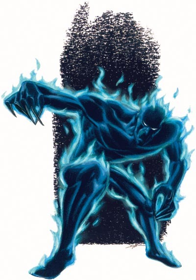

大型(不死生物,火)
这个高大的,闪亮的,炭黑的类人生物闪烁着蓝白色火焰。它那亮黄色的双目中隐现出危险之光。

| 生命骰： | 10d12(65hp) |
| 先攻： | +5 |
| 速度： | 50尺(10格) |
| 防御等级： | 17(-1体型,+5敏捷,+3天生),碰触14,措手不及12 |
| 基本攻击/擒抱： | +5/+10 |
| 攻击： | 碰触+9近战(2d6寒冷伤害加1d6点魅力吸取) |
| 全力攻击： | 碰触+9近战(2d6寒冷伤害加1d6点魅力吸取) |
| 面宽/触及： | 10尺/10尺 |
| 特殊攻击： | 魅力吸取 |
| 特殊能力： | 黑暗视觉60尺,易受元素驱散,霜火护盾,免疫火焰,无止饥渴,不死生物特性,易受寒冷伤害 |
| 豁免： | 强韧+3,反射+8,意志+7 |
| 属性： | 力量12,敏捷21,体质-,智力11,感知11,魅力17 |
| 技能： | 跳跃+26,聆听+13,潜行+18,侦察+13 |
| 专长： | 闪避,灵活移动,跳跃攻击,武器娴熟 |
| 地域： | 任意 |
| 组织： | 单独,成对或是群(3-5) |
| 挑战等级： | 6 |
| 宝物： | 无 |
| 阵营： | 总是混乱邪恶 |
| 进化： | 11-20HD(大型);16-30HD(超大型) |
| 等级调整： | +4 |
煤渣衍体是火元素烧干后残余下来的不死生物。它们憎恨活物的体温并且搜索和消灭所有这样的生物。
和火元素一样,煤渣衍体无法进入水中或是其他任何无法燃烧的液体中。
一团水对煤渣衍体来说是无法通过的障碍物除非它能饶过或是跳过去。站立的煤渣衍体有12尺高重达200磅。煤渣衍体说火族语。
煤渣衍体小心的选择目标,利用它的灵活移动和跳跃攻击专长到达那些可能在其其他的队友保护之下的脆弱敌人。
魅力吸取(Su)：被煤渣衍体的碰触攻击击中的生物必须做一次DC 18的强韧豁免否则便会被吸取1d6点魅力值。(拥有火系亚种的生物在该豁免中受到-4减值。)当煤渣衍体吸取到敌人的魅力值时,它将获得5点临时生命值,无论它吸取了多少点。这些临时生命值将持续1个小时。豁免DC基于魅力。
易受元素驱散(Ex)：既能驱散不死生物又能驱散火系生物的角色在驱散煤渣衍体上的驱散检定上有+2加值。既能斥喝不死生物又能斥喝火系生物的角色在斥喝煤渣衍体上的驱散检定上有+2加值。
霜火护盾(Su)：任何使用天生武器或是近战武器(除了长型武器)攻击煤渣衍体的生物都要受到1d6点寒冷伤害如同被煤渣衍体吸取了身体的热量。
无止饥渴：煤渣衍体对魅力拥有无止尽的饥渴(见第1章的不死生物生活方式的段落),它用魅力吸取能力来获得满足。